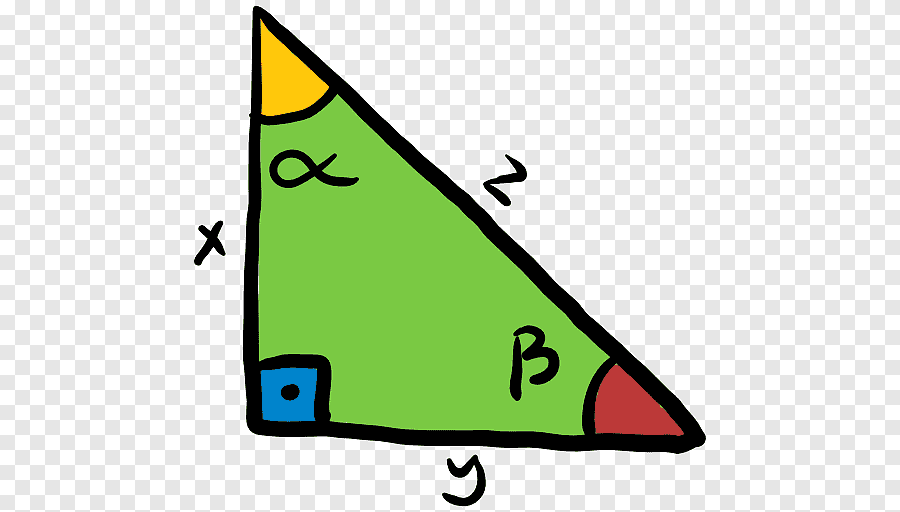

Matemáticas Básicas: TrigonometríaIntroducción a las razones trigonométricas y su aplicación |
|||||||||||||||||||||||||
| Inicio | Números | Suma | Resta | Multiplicación | División | Trigonometria | Geometría | Álgebra | Contacto | |||||||||||||||||||||||||
Cómo usar esta página
Consejos útiles
CuriosidadLa palabra "trigonometría" proviene del griego: trigonon (triángulo) y metron (medida). Su origen está en la astronomía antigua. |
¿Qué es la Trigonometría?La trigonometría es una rama de las matemáticas que estudia las relaciones entre los ángulos y los lados de un triángulo, especialmente el triángulo rectángulo. Razones trigonométricas básicasEn un triángulo rectángulo, se definen tres razones principales:
EjemploSi en un triángulo rectángulo el ángulo es 30° y la hipotenusa mide 10:
Propiedades importantes
AplicacionesLa trigonometría es muy utilizada en:
Tabla de valores notables
Ejercicios propuestos
|
||||||||||||||||||||||||
|
© 2025 Matemáticas Básicas | Proyecto educativo en HTML puro |
|||||||||||||||||||||||||